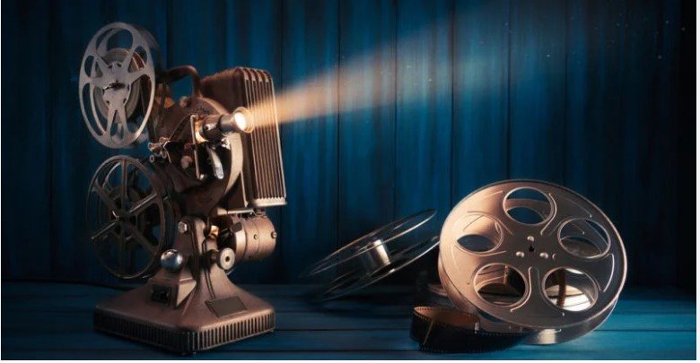

Last Cine es un proyecto digital creado con el propósito de acercar a los usuarios al fascinante mundo del cine. Nuestro sistema web busca convertirse en un espacio confiable y atractivo donde los amantes del séptimo arte puedan encontrar información actualizada sobre estrenos, reseñas de películas clásicas, noticias relevantes de la industria cinematográfica y recomendaciones personalizadas.
La idea nació como un emprendimiento académico y cultural, con la visión de fomentar el interés por el cine y ofrecer un lugar donde se pueda aprender, compartir y disfrutar de este arte. Creemos que el cine es una forma de expresión que conecta culturas, emociones y generaciones.
